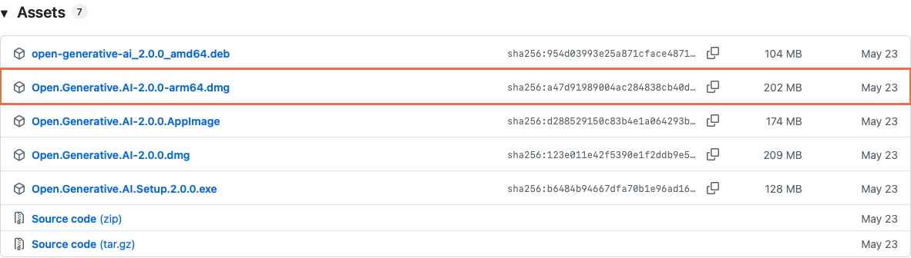
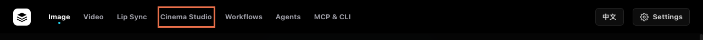
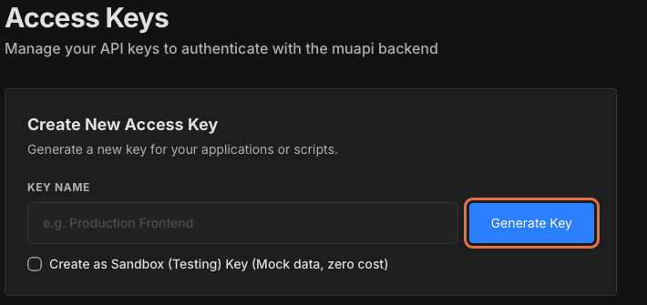
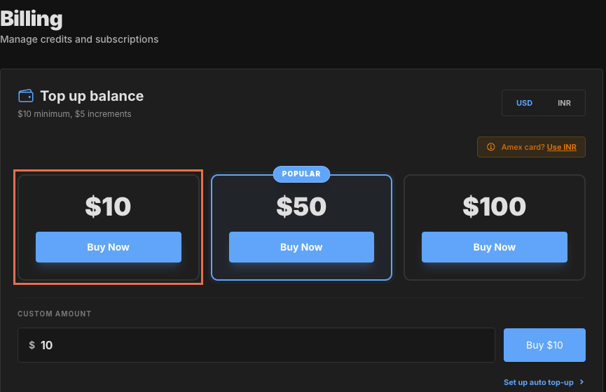
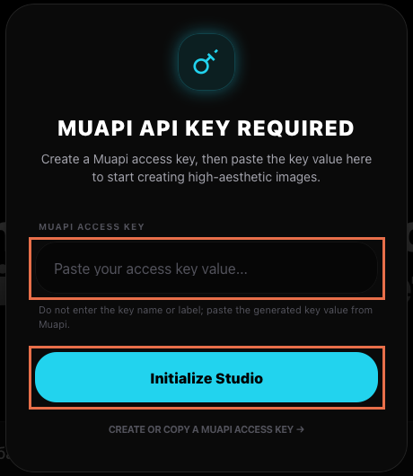
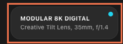
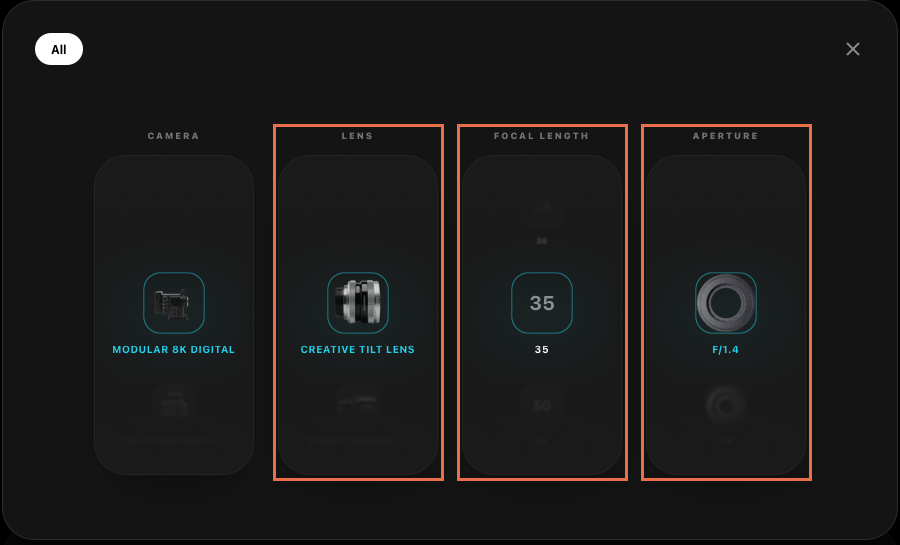
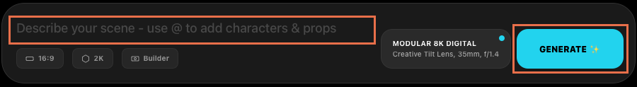

Инструкция · Первый результат
Открытая копия Higgsfield: кадры как в кино без ежемесячной подписки
Higgsfield снимает кадры как в кино, но подписку списывает каждый месяц, даже если за месяц получилось всего три картинки. Разработчик выложил на GitHub открытую копию этой студии, Open Generative AI. Режим Cinema Studio на месте: выбираешь камеру, объектив и диафрагму, а промпт приложение собирает само. Подписки нет, списывается только за готовый кадр, по прайсу на 05.10 это около 12 центов
Ниже весь путь по шагам: какой файл скачать, как пропустить приложение через защиту Mac, где взять ключ и как сохранить первый кадр. Код писать не нужно, терминал не понадобится
Что это за приложение и сколько стоит кадр
Open Generative AI собирает в одном приложении на компьютере картинки, видео, синхрон губ и Cinema Studio
Код проекта открыт на GitHub, на 05.10.2026 у него 29 648 звёзд: это значит, что проектом пользуются и следят за ним десятки тысяч человек. Само приложение скачивается и ставится без подписки
Кадры рисует не твой компьютер, а сервис MuAPI. Приложение работает как пульт: камеру и объектив выбираешь у себя, описание сцены уходит в MuAPI, обратно приходит готовая картинка. Поэтому нужен свой аккаунт MuAPI с ключом и балансом
Сколько это стоит: подписки нет, баланс пополняется от 10 долларов, а списывается только за готовые кадры. По прайсу на 05.10.2026 один кадр Cinema Studio стоит около 12 центов, то есть 10 долларов хватит примерно на 80 кадров. Цены у сервиса могут меняться, перед запуском загляни в прайс
1. Скачай установщик под свою систему
Открой официальные Releases на GitHub. Это раздел готовых выпусков программы. На 05.10.2026 последним обозначен v2.0.0 от 23.05.2026 с меткой Latest («Последний»). Раскрой Assets («Файлы выпуска») и выбери вариант
- Windows:
Open.Generative.AI.Setup.2.0.0.exe, 128 МБ - Mac с Apple Silicon:
Open.Generative.AI-2.0.0-arm64.dmg, 202 МБ. В меню Apple → «Об этом Mac» такой компьютер показывает чип Apple M - Mac с Intel:
Open.Generative.AI-2.0.0.dmg, 209 МБ, без arm64 в названии - Linux:
Open.Generative.AI-2.0.0.AppImageили пакетopen-generative-ai_2.0.0_amd64.debдля Debian/Ubuntu

Результат: скачался установщик подходящего формата из официального выпуска
Если не получилось: дождись загрузки Assets и сверь название файла со своей системой. Для Mac сначала выясни чип, затем выбирай DMG. Source code («Исходный код») скачивать не нужно: далее идём через готовое приложение
2. Установи и запусти студию
- Mac: открой DMG и перенеси приложение в «Программы» (Applications), если установщик предлагает такое окно. Затем попробуй открыть Open Generative AI. Предупреждение macOS разбирается в следующем шаге
- Windows: запусти EXE, следуй указаниям установщика и открой приложение из меню «Пуск»
- Debian/Ubuntu: открой DEB через установку программ и после установки запусти приложение. Для AppImage используй свойства файла: разреши выполнение как программы и открой его
После запуска в верхней строке видны Image, Video, Lip Sync, Cinema Studio, Workflows, Agents и MCP & CLI, справа Settings («Настройки»)

Результат: программа установлена; на Windows/Linux она открывается, а на Mac первая попытка может закончиться предупреждением защиты
Если не получилось: сначала проверь, что установщик взят из нужного выпуска и подходит системе. При предупреждении macOS перейди к шагу 3; при другой ошибке сверяй сообщение со страницей выпуска или обратись к Claude через блок помощи в конце
3. Разреши первый запуск на Mac
На Windows и Linux пропусти этот шаг. У Mac-версии v2.0.0 нет нотариального заверения Apple, а подпись приложения локальная (ad-hoc): она не подтверждает личность разработчика. Поэтому защита macOS при первом запуске показывает предупреждение и не открывает приложение
Apple предупреждает: ПО без подтверждённой подписи и подлинности может быть опасным. Продолжай только с приложением из официального репозитория. Если предупреждение говорит, что программа повреждена или навредит компьютеру, этот обход не применяй
- После попытки открыть Open Generative AI зайди в «Системные настройки»
- Открой «Конфиденциальность и безопасность», прокрути вниз до сообщения о блокировке именно этого приложения
- Нажми кнопку подтверждения открытия. В русской инструкции Apple она называется «Подтвердить вход», в английском интерфейсе - Open Anyway («Всё равно открыть»)
- В повторном предупреждении нажми «Открыть». После подтверждения приложение сохраняется как исключение и открывается двойным щелчком
Результат: Open Generative AI открывается на Mac, видна верхняя строка разделов студии
Если не получилось: убедись, что попытка запуска уже была и сообщение относится к Open Generative AI. Если кнопки нет или настройками управляет администратор, сверь предупреждение со страницей Apple; не отключай защиту целиком
Программа открылась. Теперь подключим аккаунт, в котором будет учитываться расход за первый кадр
4. Подключи свой ключ MuAPI и пополни баланс
API-ключ - секретная строка, по которой MuAPI узнаёт, что запрос пришёл от тебя, и списывает расход с твоего баланса
- Открой Access Keys («Ключи доступа») в MuAPI. Нажми Sign In («Войти»); если аккаунта нет, создай его на этом сайте
- В поле KEY NAME («Название ключа») введи понятное название, например «Моя студия». Оставь Create as Sandbox (Testing) Key выключенным: эта галочка создаёт тестовый ключ с демонстрационными данными, настоящего кадра не будет. Нажми Generate Key («Создать ключ») и скопируй значение созданного ключа

В Billing («Баланс») открой Top up balance («Пополнить баланс»). Минимум пополнения - $10, шаг суммы - $5; доступны USD (доллары США) и INR (индийские рупии). Для маршрута в долларах выбери USD и нужную сумму, нажми Buy Now («Пополнить сейчас») и следуй форме сервиса. После завершения проверь, что сумма появилась в балансе. Подписка не обязательна: тариф Free работает по расходу за генерацию (Pay as you go)

- Вернись в приложение и открой Cinema Studio. Если окно ключа ещё не появилось, введи описание сцены и нажми GENERATE: без ключа эта кнопка открывает окно MUAPI API KEY REQUIRED («Нужен API-ключ MuAPI»)
- В поле MUAPI ACCESS KEY («Ключ доступа MuAPI») вставь само значение ключа, не название «Моя студия». Нажми Initialize Studio («Запустить студию»)

Результат: окно ввода ключа закрыто, ключ подключён, баланс MuAPI пополнен для настоящего запроса
Если не получилось: при 401/403 (ошибке доступа) проверь значение ключа и лишние пробелы. При ошибке баланса открой Billing; если вместо настоящего кадра приходят тестовые данные, проверь галочку Sandbox. Ключ вводи только в приложение: в чат Claude и на скриншот он попадать не должен
5. Настрой объектив, фокусное и диафрагму в Cinema Studio
Во вкладке Cinema Studio («Киностудия») найди поле Describe your scene («Опиши сцену»). Внизу видны 16:9, 2K, Builder, карточка камеры и GENERATE. Для первой попытки оставь 16:9 и 2K, затем нажми карточку камеры рядом с кнопкой генерации

Откроется панель CAMERA / LENS / FOCAL LENGTH / APERTURE. В CAMERA («Камера») оставь Modular 8K Digital, в LENS («Объектив») - Creative Tilt Lens, в FOCAL LENGTH («Фокусное расстояние») - 35 mm, в APERTURE («Диафрагма») - f/1.4. Эти значения выбраны по умолчанию в версии 2.0.0 и показаны на скрине

Закрой панель крестиком справа вверху. По документации проекта параметры камеры добавляются к текстовому запросу для модели; они задают ориентир для картинки, а не обещают точную симуляцию настоящей оптики
Результат: карточка у поля запроса показывает Modular 8K Digital, Creative Tilt Lens, 35 mm и f/1.4
Если не получилось: при отсутствии Cinema Studio проверь версию приложения. Если значения другие, открой карточку и выбери нужные в соответствующих колонках
Осталось описать сцену и увидеть, как эти настройки проявятся в кадре
6. Создай один кадр и дождись результата
В поле Describe your scene введи один простой запрос своими словами, например: «Керамическая чашка на деревянном столе у окна, мягкий утренний свет, без надписей». Это пример для первой попытки; совпадение всех деталей заранее не гарантируется
Cinema Studio рисует кадр моделью Nano Banana Pro, по прайсу MuAPI на 05.10.2026 это около 12 центов за кадр
Нажми GENERATE («Создать») один раз и дождись завершения задания. Пустой запрос не запускается. Не отправляй копии задания, пока оно выполняется

Результат: в области просмотра появился созданный кадр, а не только сообщение об отправленном запросе
Если не получилось: прочитай сообщение приложения. Ошибка доступа возвращает к шагу 4, ошибка баланса - к Billing в MuAPI. Если задание остаётся в работе, проверь его состояние перед повтором. Сколько списалось за попытку, видно в Usage («Расход»)
7. Скачай кадр и найди его на компьютере
- Найди готовый кадр в истории справа, HISTORY («История»), и нажми Download («Скачать»). В версии 2.0.0 приложение сохраняет JPEG с именем
cinema-shot-<число>.jpg - В окне сохранения macOS или Windows выбери папку, например «Изображения», и подтверди сохранение. Приложение не задаёт папку заранее, поэтому запомни выбранное место
- Открой выбранную папку и сам файл отдельно от Open Generative AI
Результат: один кадр лежит в известной папке и открывается как обычное изображение
Если не получилось: вернись к готовому кадру в HISTORY и повтори скачивание, не генерацию. Если папка неизвестна, найди на компьютере файл по началу имени cinema-shot-
Теперь есть результат всего маршрута: собственный кадр, который открывается с компьютера. В аккаунте MuAPI загляни в Usage («Расход»), чтобы увидеть стоимость именно своей попытки
От первого кадра к своему инструменту
Open Generative AI собрали вокруг одной задачи: управлять генерацией через понятный интерфейс. Такой же подход можно применить к своему делу: собрать сайт с портфолио, бот с цепочкой сообщений или калькулятор. После первого кадра задача уже становится конкретной: какие поля нужны человеку и какой результат он должен сохранить
Практикум
Собери инструмент под своё дело
На ИИ-Лагере показывают, как собрать сайт, бота или калькулятор с Claude Code и Codex. Это ИИ-помощники, которым ты описываешь задачу словами, а они пишут код. На практикуме этот путь проходят по шагам, без программирования
На ИИ-Лагерь